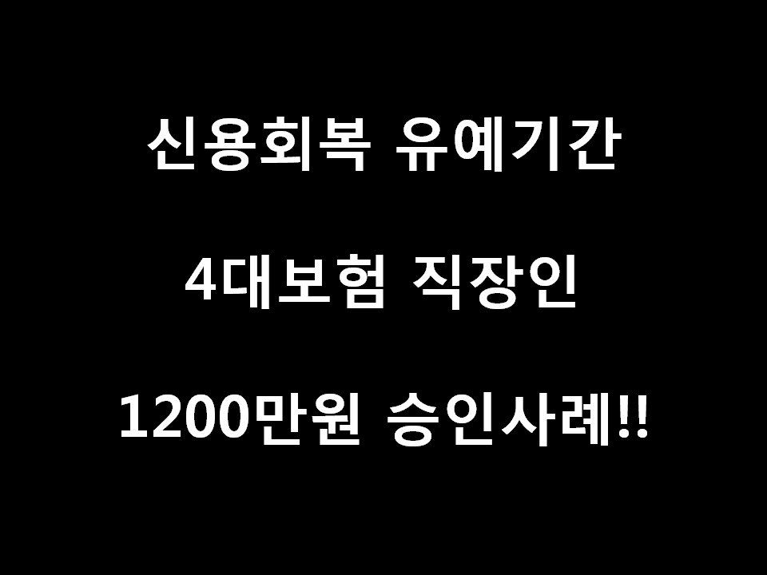
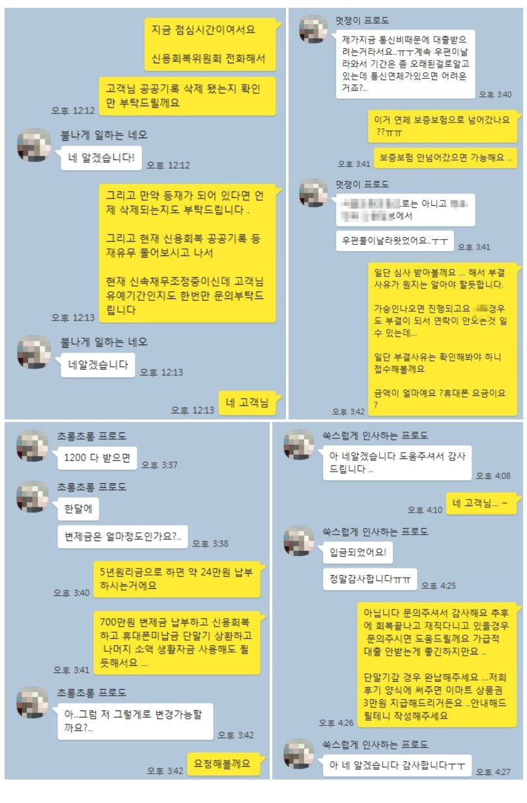

신용회복 유예기간 4대보험 직장인 1200만원 대출승인사례!!

안녕하세요 뱅크앤론 회원여러분... 김한수 상담사입니다. ^^ 7월달 금리인하를 앞두고 있는 요즘 고객분들께서 많은 문의를 주시는데요... 법정금리 인하가 7월부터 시작이지만 ..개인회생 직장인 분들 상대로 일부 금융사에서는 현재도 금리를 낮춰주는 상품도 있습니다.. 문의주시면 자세한 상담통해 도움드리겠습니다.
오늘은 신용회복 유예기간 4회납부한 직장인 사례를 통해 안내해드리겠습니다.
고객님께서는 95년생 여성분이시고 재직기간은 정확히 3개월 급여 180만원 3번수령한 고객님이십니다.
신용회복 126회동안 하면서... 회차별로 납부할 금액입니다.
1~6회 11,899원
7~30회 94,539원
31~54회 88,225원
55~124회 84,443원
125회 84,436원
126회 84,092원
현재 유예기간이고 필요자금은 휴대폰 단말기 연체값 300만원 문의주셨습니다.
신용회복 채권에는 카드사 2곳 대부업 1곳해서 총 금액이 700만원이었습니다.
공공기록이 삭제 안된걸 파악하고 ..정부지원 상품 통해 대출 도움드린 결과 1200만원 8% 통해 도움드렸습니다.
고객님께서는 1200만원 대출 받으셔서 기존 휴대폰 단말기 300만원 신용회복 채권 700만원 갚으시고 남은 200만원 생활자금 사용할 수 있게 도움드렸습니다.
아래는 저와 고객님의 카톡대화내용입니다. 대출이 필요할때 문의주시면 도움드리겠습니다 감사합니다.
